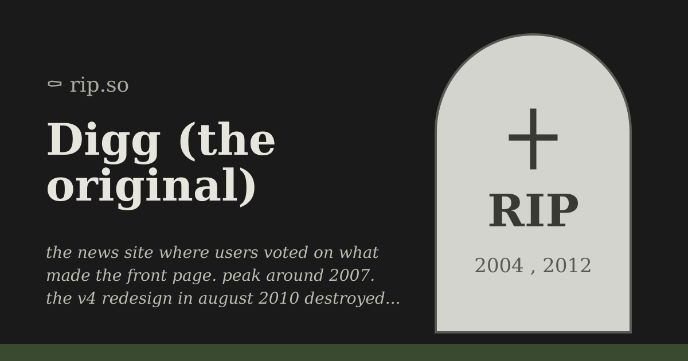

Digg
The front page the crowd voted for, until the crowd voted with its feet.

In December 2004, Kevin Rose and his partners launched a news site with one mechanic: you dug a story, and enough digs pushed it to the front page. It was called Digg, and for a few years its front page was the internet's town square -- a page that changed constantly and belonged, in some genuine sense, to whoever showed up to vote. [S1]
The crowd had power, and the power had a name. A front-page hit could flatten smaller sites under the load of its visitors -- the Digg effect, a term of both awe and dread among webmasters of the era. Getting Dugg was a traffic event, a badge, and occasionally a small catastrophe. No single editor decided anything; a few thousand strangers clicking a button did. [S1]
Then, in August 2010, came version 4. The redesign rebuilt the site around followed publishers and automated feeds -- the crowd's front page replaced by something more like a broadcast schedule -- and the crowd responded with the only vote that counts: it left. A user revolt filled the site's own channels with protest, and a mass exodus carried the community to Reddit, the rival that had been patiently growing in Digg's shadow. Version 4 was walked back piece by piece, but the exodus was not. The town square emptied into the other town square, and it never came back. [S1]
The corporate ending was quick. In July 2012 the site's core assets were sold to Betaworks for a price reported at around half a million dollars -- reported, contested in its details, but a fraction of the venture capital the company had raised either way. The thread announcing the acquisition has the stunned tone of a neighborhood watching its landmark sell at a yard sale. [S2]
What should be remembered is the shape of the fall, because it became the web's most-cited parable. Digg did not die of competition; it died of a redesign -- of a platform deciding its users' curation was a bug and publisher reach was the feature. Every community product since has August 2010 drilled into it as a warning: the users are the product's editors, and editors who are ignored go edit somewhere else. [S1]
The afterlife is long and full of second acts -- relaunches, reinventions, and, in 2018, a retrospective essay on the v4 launch that read the disaster as "an optimism born of necessity," a defense that drew its own crowd of unpersuaded veterans. [S3] And the name kept being reused until it was not: in 2026 Hacker News carried the latest closing under a two-word headline, Digg is gone again -- the "again" doing the work of a whole obituary, and 424 points of former users nodding it into the ground. [S4]
A voting system, a revolt, a yard sale, and a name that died more than once. In 2004 the crowd built a front page. In 2010 the site took it away from them, and the crowd, being the crowd, went and built another one somewhere else.
Remembered: the digg button, the Digg effect, and the lesson that a community product cannot outvote its community.
Sources
- S1: Wikipedia: Digg -- https://en.wikipedia.org/wiki/Digg
- S2: Hacker News (2012-07-12, 251 points) -- https://news.ycombinator.com/item?id=4236601
- S3: Hacker News (2023-06-06, 246 points) -- https://news.ycombinator.com/item?id=36210548
- S4: Hacker News (2026-03-13, 424 points) -- https://news.ycombinator.com/item?id=47368135
PROVENANCE
| Exhibit no.: | 005 |
| Data-source mode: | facts: seed-corpus; wikipedia-unreachable; wayback-cdx-unreachable; hn-algolia (live, subject query) |
| Illustration: | sourced image -- Bing image search, retrieved 2026-08-29 |
| Found via: | bing-image-search |
| Image url: | https://rip.so/og/digg.png |
| Generated: | 2026-08-29 |
| Generator: | deadweb-pipeline 0.1 (deterministic scaffold) |
| Editorial pass: | web-product-engineer (editorial pass 2) |
| Status: | published |
| Source page: | https://rip.so/digg.html |
SOURCES
- Wikipedia: Digg -- https://en.wikipedia.org/wiki/Digg
- Hacker News thread: "Betaworks has acquired the core assets of Digg" (2012-07-12) -- https://news.ycombinator.com/item?id=4236601
- Hacker News thread: "Digg's v4 launch: an optimism born of necessity (2018)" (2023-06-06) -- https://news.ycombinator.com/item?id=36210548
- Hacker News thread: "Digg is gone again" (2026-03-13) -- https://news.ycombinator.com/item?id=47368135